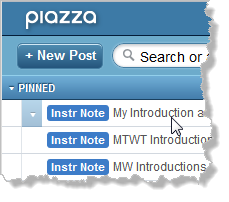

CS 170 Syllabus, Fall 2012

Hello, my name is Stephen Gilbert. Welcome to the CS 170, Java Programming I information page. Java Programming I is a transfer class for Computer Science (as well as some other science) majors. CS 170 is typically the first class in the Computer Science sequence, and is required if you intend to take advantage of the UCI SMART-ICS transfer program.
In Fall 2012, we'll be offering four sections of CS 170; all four sections are fully on-campus classes. There are no hybrid or online sections this semester.
- Where and when is the course, and who's teaching?
- What does the course cover, and what do I need to know before I enroll?
- How can I successfully complete the course?
- What textbook and software will I need for the course?
- Course policies concerning attendance, late work, etc.
Who, Where, and When
Let's start with the where and when. All four sections of CS 170 meet in room 105 in the Clark Computing Center. (Map: building 73 in the upper-left corner, across from the softball field, by the Adams St. Parking lot.).
- CRN# 21831 (MTWT) meets on Monday through Thursday 11:10 AM to 12:25 PM
- CRN# 24347 (MW) meets on Monday and Wednesday from 2:20 to 4:55 PM
- CRN# 23001 (TT-AFT) meets on Tuesday and Thursday from 2:20 to 4:55 PM
- CRN# 22191 (TT-EVE) meets on Tuesday and Thursday from 6:00 to 8:35 PM
Instructor Contact Information
- Stephen Gilbert
- Office : Clark Computing Center F
- Office hours : M-TH: 12:30-2:00 PM
- Email : StephenGilbert@gmail.com or sgilbert@occ.cccd.edu
- Office phone : (714) 432-0202 ext 21173
- Home page : http://faculty.orangecoastcollege.edu/sgilbert/
What is CS 170 All about?
Here's the official course description from the OCC catalog:
A first Computer Science course taught using the Java programming language. Students will build console and graphical applications and applets. Emphasis will be placed on programming fundamentals such as variables, selection and loops as well as object-oriented programming concepts including classes, inheritance and polymorphism.
At OCC, CS 170 is one of the first courses in the Computer Science major for students who intend to transfer to a 4-year institution. This class will introduce you to the principles of Computer Science, using the Java programming language; it isn't a "Web programming class" like HTML or JavaScript.
Prerequisites
In this class, you will learn to write programs, but you won't learn how to use a computer. Before you enroll, read the following section, and make sure you feel you've mastered the skills I've listed here. There is no prerequisite for this course but I assume that you are "computer literate". In the context of this course, that means you know how to:
- Install and run programs on your computer
- Create and save plain text files using a text editor
- Copy, move, delete and find files and folders
- Browse the Web and use email.
If you don't feel comfortable doing these things, you should take either CIS 100 or CS 111, which are more basic computer literacy types of courses.
You don't have to have any previous programming experience. You should be able to think logically and understand basic mathematical notation. While you won't have to do a lot of math, you will need to convert mathematical formulas into programs.
Goals and Objectives
In this course you'll learn how to write computer programs, using the Java programming language. On successful completion of the course, you will be able to:
- Explain the Java programming model, particularly its support for object-oriented software development, and cite its strengths and weaknesses.
- Learn to use a variety of development tools for creating Java programs.
- Design and code Java programs, applets and applications, console and GUI programs, using Java's Swing and AWT class libraries.
- Read and understand the official Java documentation sufficiently well that it serves as a primary vehicle for further learning.
Here are the Student Learning Outcomes or SLOs for the course. Students will be able to:
- Create, compile, execute, and test Java applications and applets.
- Create programs that correctly apply object-oriented programming techniques, including designing classes and methods, and implementing the concepts of polymorphism and inheritance.
- Implement selection structures (if/else and switch), repetition structures (while, do/while, and for), and one- and two-dimensional arrays.
How can I succeed in CS 170?
Here's the information you need to succeed in CS 170. Below you'll find information about the course workload, the exams, quizzes, exercises, discussion, and homework, as well as information on how you'll be graded.
How much time will I have to spend on CS 170?
Everybody learns in different ways and at different speeds; in general though, you should plan on spending about two hours each week outside of class, for each class lecture hour, if you're an average student and want to receive an average (C-B) grade. For CS 170, that translates to about 8 hours a week, in addition to the five hours of class time. (It's 8 hours instead of 10 hours, because 1.75 hours a week is "lab" time.)
If you're a good student or you're satisfied with a lower grade, you may get by with less. If you have difficulty with the material, or if you want to receive an A in the course, you'll probably have to spend more time.
Rather than trying to get your extra hours in by staying up all night every Saturday and Sunday, try to budget your time. Spend a couple hours every day, one hour reading the material, and one hour in the computer lab, or on your computer at home, working on problems. Remember, though, that this is college and it's up to you to remember your deadlines and to arrange your time appropriately.
How Will I Be Graded?
In this class, most of your grade (about 80%) will be based on how well you have learned the material and upon your ability to demonstrate programming proficiency. To measure those two things, the course has two kinds of exams:
- There is one Midterm, and one Final exam, both worth 20% of your grade (40% total). You'll take these exams on blackboard and they will consist of objective short-answer and multiple-choice questions from the reading and lecture. Many of them involve reading a portion of programming code and determining its output.
- There are 10 hands-on programming proficiency quizzes. These quizzes are one-half hour long and are worth 40% of your grade. These will be given each week.
All on-campus exams are closed-notes, closed book. For the proficiency exams I will supply you with a short Java syntax-summary sheet for use during the quiz, if it is appropriate for that exam.
Reading Quizzes?
Twice a week (generally), we will begin the class with a short (15 minute) reading quiz taken online. These quizzes are designed to make sure you read the text before you come to class, and that you understand the material. These quizzes will count for 5% of your final grade. You'll certainly want to take them to see what kinds of questions you can expect on the midterm and final exams.
What about programming exercises, labs and homework?
 Learning to program is a lot like learning to play the tuba;
you'll never be any good unless you practice. To help you do
this, you'll spend most of your out of class time,
and a portion of each class period, writing programs. Each
week I'll assign you several different problems from
the material we've covered that week.
Learning to program is a lot like learning to play the tuba;
you'll never be any good unless you practice. To help you do
this, you'll spend most of your out of class time,
and a portion of each class period, writing programs. Each
week I'll assign you several different problems from
the material we've covered that week.
Some of these will be short problems that you can do in a few minutes; most will take between fifteen minutes to a half hour. At least one problem each week should take you a couple of hours to complete.
You will turn in all of your assignments electronically using the DrJava IDE. Programs are graded on correctness and style, usually by running a testing program that I've supplied for that assignment. When you close DrJava, all of your grades for the assignments you've worked on will be uploaded to our server.
Homework assignments will be be worth 10% of your grade.
"Labs" and Hands-On Exercises
CS 170, as you know, is a lecture-lab class. Unlike in
Biology or Chemistry, where you have a separate lab period,
the CS 170 lab is integrated with the lecture.
 This has a couple of advantages, but the most important one is
that you get some hands-on experience right when we're
discussing a topic, instead of waiting until you try to
do your homework. That way, if you have any problems, you
have a chance to ask questions and correct your
misconceptions earlier, instead of later.
This has a couple of advantages, but the most important one is
that you get some hands-on experience right when we're
discussing a topic, instead of waiting until you try to
do your homework. That way, if you have any problems, you
have a chance to ask questions and correct your
misconceptions earlier, instead of later.
Each class meeting you'll work on a lab exercise, either filling out and submitting a form, or writing and checking a program, similar to the homework assigment that was due that day.
In-class Lab exercise will be worth 10% of your grade.
Class Participation
One of the greatest learning resources at your disposal are the other students you'll meet in this class. Take advantage of them; ask the person next to you to help you with something you don't understand, or offer to help someone else who is struggling.

To encourage you to help each other, I want you to use the Piazza Online Discussion area to ask all of your technical questions, instead of sending me an email message. Let's keep email for "personal" correspondence—things like "I'll be missing class this Tuesday", instead of questions like "Why do I get this error message when I compile?"If you ask your technical (course related) questions on the discussion board, you'll help all the other students who are having the same problem, but didn't think to ask. (I will answer questions posted on the discussion board, after I've given your fellow students an opportunity to respond. I also read all of the messages on the discussion board, even if I don't reply.)
I will post class announcements and general tips in the Announcements section of Piazza as well! You should make sure you check regularly (at least a couple times a week) for new announcements.
What's the Grading Scale?
You may take this course for a grade, or on a CR/NCR basis. If you take the course for credit/no-credit, you must obtain a score equivalent to a "C" to get credit. (If you're transferring, though, make sure that the institution you're transferring to will accept CR/NCR; most institutions won't if it's a requirement for your major.)
Grades will be assigned based on the following weights:
| Written Midterm Exam | 20% |
| Written Final Exam | 20% |
| 10 Programming Proficiency Quizzes | 40% |
| Homework Assignments | 10% |
| In-Class Lab Assignments | 10% |
| In-Class Reading Quizzes | 5% |
As you can see, this adds up to 105%. Of course, if you saw the "Homer at the Bat" episode of the Simpsons, you know that's impossible; by definition, the most anyone can earn is 100%. So, you'll be graded using 100% as the maximum, leaving the extra 5% for "extra credit" or emergencies.
Letter grades will be assigned using the following scale, based upon a maximum of 100%:
| Grade | Percentage |
|---|---|
| A | 89% |
| B | 75% |
| C | 62.5% |
| D | 50% |
| F | <50% |
What Resources Will I Need?
This semester, we will be using a free online textbook that I've compiled from previous Java textbooks I've written. You'll be given instructions on accessing the textbook in class.
Software
All of the software you need to complete this course is installed on the computers in the OCC Clark Computing Center. However, many of you will want to work at home, especially if you are in the online section. Here is a short list of the software you'll need to install on your computer to complete the course. All of this software is free.
IDE
This semester rather than switching between several different
development environments, we'll be using the
Dr. Java IDE the entire semester.
Dr. Java is a free, open-source program, written
in Java. It was developed and is maintained by the
PLT group at Rice University.
Other Supplies
Each of you will be given a network account with a limited (100MB) amount of storage space that can be accessed from any computer in the OCC Computing Center. To access your files from home, though, create a Dropbox account or bring your own USB thumb drive.
What Are The "Rules" For This Course?
One of Murphy's laws says "if something can go wrong, it will". Try to keep this in mind as you plan your coursework. The network in the lab may be down, you may accidentally reformat your disk, you might have more difficulty with a problem than you expect, and, yes, your dog might even eat your homework. (I keep a set of student disks that my dog ate, just to remind myself that this is not always a fictitious excuse.)
Since all of these things can happen, you need to emulate the Boy Scouts, and "be prepared." The best preparation is to do your work early, not late, because I will not accept late work, period.
Instead of allowing you to turn in late work, I allow you to earn a certain amount of extra credit as "wiggle room" (the "impossible" extra 5% in this class). That means, you could skip all of the quizzes or half the homework assignments, and still end up with a perfect score (as unlikely as that may be). Of course, if you do all of the assignments the extra percentage points will be "extra credit".
I will provide at least two "makeup" days for the programming quizzes where you can take up to two of the programming exams you missed, or retake the exams that you did poorly on. (That means, of the ten proficiency quizzes, you may retry four of them.) These makeups will take place before the midterm and before the final.
Attendance and Withdrawal
If you miss two or more classes, (especially at the beginning of the semester, when other students are trying to add the class), you may be dropped without notice. Don't assume, though, that you will be automatically dropped if you fail to complete the material. It is your responsibility to withdraw from any class. If you stop attending, yet fail to withdraw, you will receive a grade of 'F'.
Also note that the exams will be given at the scheduled class period and time. There will be no makeup exams if you miss.
Please pay special attention to the OCC drop deadlines. Every semester I have students who want to drop the class after the deadline to drop has already passed. Those students end up getting an 'F' in the class if they are unable to complete the coursework. I do not give Incomplete grades.
Academic Honesty
Programming by its nature relies on learning from the work of others. You are encouraged to examine each other's code and to discuss various approaches and coding styles. You won't really learn anything, though, if you don't "try it yourself".
In this regard, discussing the general method used to solve a problem is certainly encouraged. Taking another student's source code and modifying it is really counter-productive; you learn to program by working out the programming exercises and assignments. If you don't do the assignments yourself, you won't learn how to program, and you won't be able to pass the programming exams.
When it comes to testing time, I expect you to maintain a high level of academic honesty. Cheating on exams will result in course failure. (While the quizzes are open book, you'll get the most out of them if you treat them as closed-book, like the exams.)
Disruptive Behavior
You are entitled to an environment that encourages learning, as are all your fellow students. You should not behave in a manner that negatively impacts other class members. In a classroom. In an online class, disruptive behavior includes "flaming" or harassing email, as well as posting offensive material on your class Web site.
I expect all of you to be polite, respectful, and helpful to your fellow students; in short, I expect you to act like adults should act. If, in my judgment, your behavior negatively impacts the rest of the class, you may be subject to disciplinary action.
Disabilities
If you have a disability that may impede your ability to successfully complete this course, you should contact the Disabled Student's Center (432-5807 or 432-5604 TDD) not later than the first week of the course. Their staff will assist you in arranging accommodations that can help you meet course requirements.
Reservation of Rights
I reserve the right to change this syllabus, including, without limitation, these policies, without prior notice.